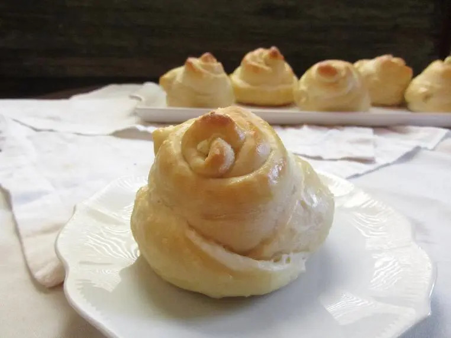

Flower Rolls
go back to main page

Description
These are a fun and decorative way to add to a dinner spread. The rolls are beautiful and unique, and can be filled with whatever you like. I enjoyed the filling I’ve included here, which includes goat cheese, garlic, and a bit of parsley or basil. The inside of the rolls stays warm and melty, and peeling back the “petals” to get to the filling is a fun way to play with your food. They are especially delicious next to a nice savory soup.
Roll Ingredients
- 4 cups all purpose/plain flour, added gradually
- 1 tsp. instant yeast
- 1 tsp. salt
- 4 tbsp. oil
- 1 egg, divided
- 2 Tbs. honey
- warm water (enough to make the dough a firm but workable consistency- exact measurement to come!)
Filling Ingredients
- 6 oz. goat cheese
- 1 egg, divided
- pinch of salt
- 1 clove garlic
- 1 Tbs. parsley or basil, diced
Steps
- In a large bowl, mix together the ingredients for your dough, using just the egg yolk. Add flour gradually until the dough is a nice cohesive consistency. Knead to a medium soft dough that bounces back when poked, and leave to rise for 1 hour.
- While the dough is rising, combine all the ingredients for the filling. Set aside.
- Divide the dough into 15-16 sections and shape them into neat balls; now you can start shaping the flowers. Roll out each ball to about 5″ diameter. Brush a bit of butter on the circle of dough. Make 4 diagonal slits, leaving the center intact. Add about 1 Tbs. filling in the center.
- Brush the outside of each filled dough circle with beaten egg white. Take the first section and wrap it around the blob of filling, pinching the sides of that “petal” together to hold it in place. Take the opposite side’s “petal” and cover the other side of the filling with it. Repeat with the two last sections, pinching or pressing the dough on the side to seal it. Repeat with each round of dough until all the rolls are made up. The rolls should look roughly like roses, with swirls of doughy petals.
- Place the prepared rolls on a greased tray. Pre-heat your oven to 350F. Brush each roll gently with the remainder of the egg white. Bake for about 15-20 minutes or until tops are golden.
- Serve soon after baking.